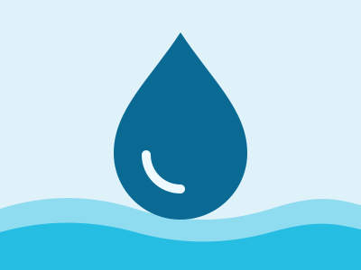

Saltar al contenido
AquaSteps
Inicio
Consultar
Alertas
Pérdidas de agua
Control del agua
AquaSteps
SIN ALERTAS
Ningún lugar requiere mantenimiento por ahora.
Pérdida total hoy
0 ml
Costo estimado
0,00 soles
Simulador de fuga
Lugar
Intensidad
Leve (5–19 ml)
Moderada (20–29 ml)
Crítica (30–60 ml)
Simular detección de fuga
Detener fuga
Monitoreo en vivo
la pérdida crece sola; se detiene al salir de la página
La fecha de hoy es:

Ver alertas
Ver pérdidas de agua